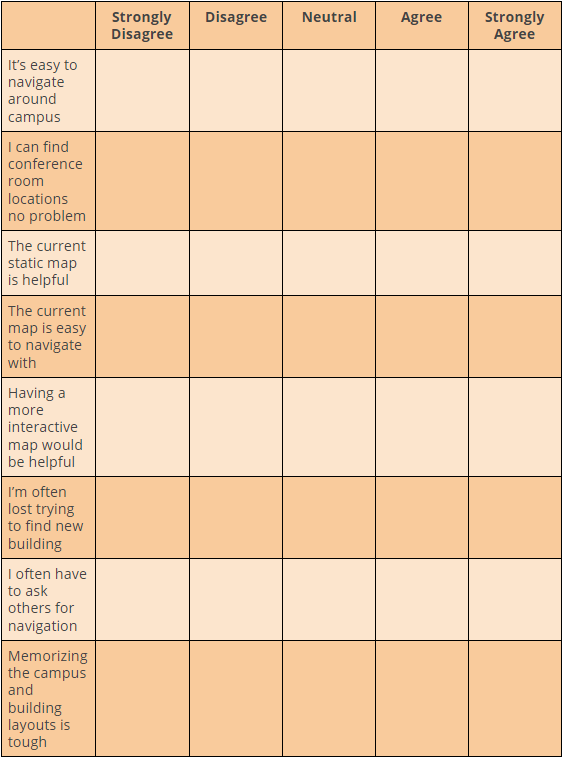

Know where you are
Role: Product Manager
Tools: Unity, Adobe XD, Microsoft Office Products, Illustrator
Responsibilities: Project Managing, UX Researcher, Product Vision/Strategy/Design
ARMM: Augmented Reality MassMutual ("arm") helps future MassMutual interns and new hires navigate the Springfield campus with interactive features in a fun and effective manner.
Summary:
A team of 5 including myself were responsible for designing an AR/VR app as our project concept, but we took a step further into developing a minimum viable product (MVP). We wanted to use AR as our technology to improve navigation on the vast Springffield campus. The app would be an internal and could only be downloaded and accessed within the company’s campus internet.
Motivating Problem:
During my internship, there was constant talk and jokes about the difficulty of navigating around the Springfield campus. Many of the first time interns had trouble finding their way, from not knowing which building is where to having trouble finding the location of a conference room. How can we provide a better UX for navigation without boring static text?
Process:
Pain points: New employees/interns have no idea have to navigate the large and vast MM Springfield Campus. However, some business implications of this problem is it can slow down cross-functional teamwork. If certain employees don't know where certain buildings or meeting rooms are located, this can cause miscommunication. In addition, knowing key contact information for each building or department can make this learning curve smoother for new employees. These problems could be considered process pain points.
Customer Discovery:
Besides our own individual experience of the navigation problem we surveyed random MM employees about their experience navigating around campus. We collected both basic qualitative and quantitative data through brief interviewing from our fellow interns and using a 1-5 Likert Scale (1 = "Strongly Disagree", 5 = "Strongly Agree")

We were able to have a basic understanding with our relatively small sample. Our basic customer discovery data showed that the current navigation features such as the internal map the company provides wasn’t helpful enough and not too effective.

We created initial paper prototypes designs of the usability when scanning a sticker. When the sticker has been scanned, a cube will immediately pop up and have respective information depending on the sticker scanned.
Once a sticker is scanned and after they view the cube, they can learn about where that department is and view their proximity to it to improve navigation. Furthermore, users could view previously scanned stickers in their collection on the same map, which serves as a gamified aspect by including a leaderboard to promote friendly competition.
Solution:
Features:
There would be scannable stickers placed throughout the campus. When activated a 3D cube will pop up and where each side has a way of consuming information regarding the department they’re in. Sides of the cubes would have an introduction video of a member of the department sharing what they do. Basic text info regarding their department. A map of where they’re located on campus, etc. This is an interactive way of learning.
Below is an interactive prototype.
KPI(s):
Because this project was to produce a MVP of our product, we didn’t get to fully measure KPIs. There would need to further discussion about which metric would be considered the sucess and tracking metrics. However, some KPIs to consider if this product was to be worked in the future would be the following...
Downloads: The amount of MM employees who have downloaded the app.
Quality of Session: Is the user using the app for a "poor quality" of time (the app wasn’t useful) or they’re using it for too long (the app has them confused and doesn’t effectively solve their problems). There would need to be a discussion regarding what’s considered a good duration for a session.
Navigation Timer: Once the desired location is set, was the estimated timer accurate in assisting navigation for the person (user).
Video Views: Are people watching these videos that are supposed to help with providing a new understanding of what the department does? What are other methods of measuring viewing retention and engagement?
Stickers Activated: Are people using the interactive sticker feature. How can we increase engagement?
Conclusion/Limitations:
During our presentation, the sponsor of our project loved our AR MVP app. We managed to get the core functionality of the AR scanning to properly work given the short time we had to develop this. Members of the team were invited for a entreprise-wide showcase of the product. We did not fully get to incorporate the other features. Some limitations of the development of this app is that we collected a small amount of data from our brief customer discovery phase. We performed in a Waterfall methodology and would've preferred to use Agile, but due to the short time span we had, we focused more on delivery.